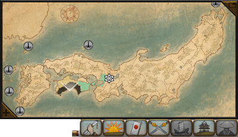

The Radar Map
The radar map shows Japan divided into provinces, with your own territory picked out in your clan's colours and icons to mark trade posts and the Imperial city of Kyoto. Click on a province to zoom the campaign map to it and centre the camera there. The radar map can be made larger or smaller with the plus and minus buttons in the corners. Clicking on the provinces button underneath the map will shift the display to show the distribution of resources and province specialities across Japan. Likewise, clicking on the armies, fleets or agents buttons will show the positions of your forces and agents on the radar map.